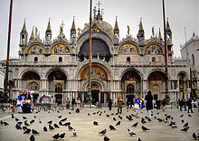
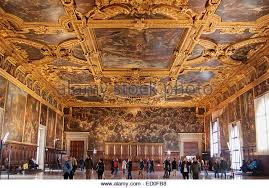

The Patriarchal Cathedral Basilica of Saint Mark, commonly known as Saint Mark's Basilica is the cathedral church of the Roman Catholic Archdiocese of Venice,northern Italy. It is the most famous of the city's churches. It lies at the eastern end of the Piazza San Marco, adjacent and connected to the Doge's Palace. Originally it was the chapel of the Doge,and has only been the city's cathedral since 1807, when it became the seat of the Patriarch of Venice, archbishop of the Roman Catholic Archdiocese of Venice, formerly at San Pietro di Castello.For its opulent design, gold ground mosaics.
The Doge's Palace is a palace built in Venetian Gothic style, and one of the main landmarks of the city of Venice in northern Italy. The palace was the residence of the Doge of Venice, the supreme authority of the former Republic of Venice, opening as a museum in 1923. Today, it is one of the 11 museums run by the Fondazione Musei Civici di Venezia.
